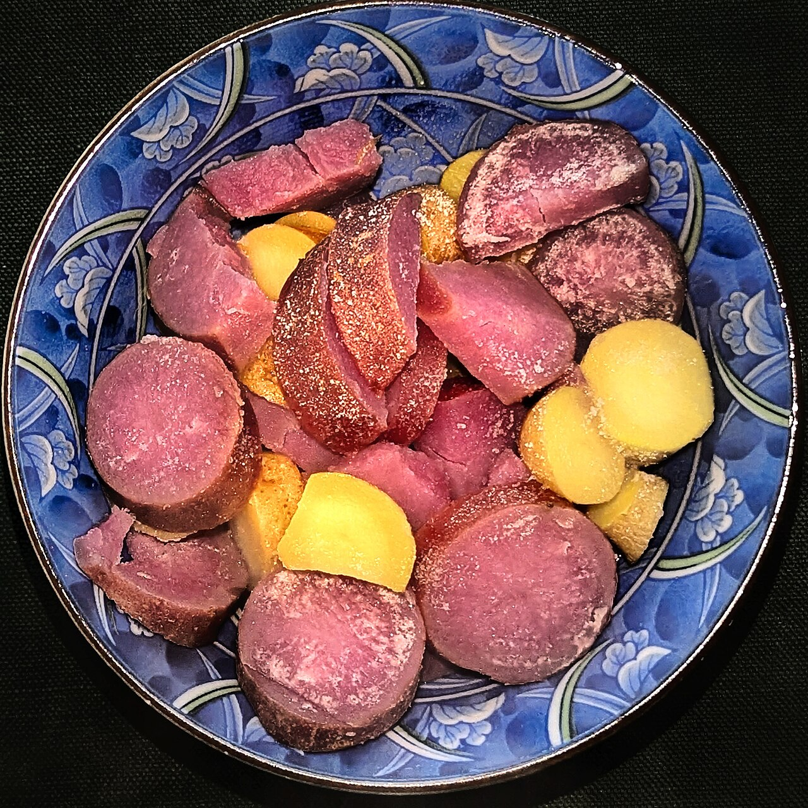
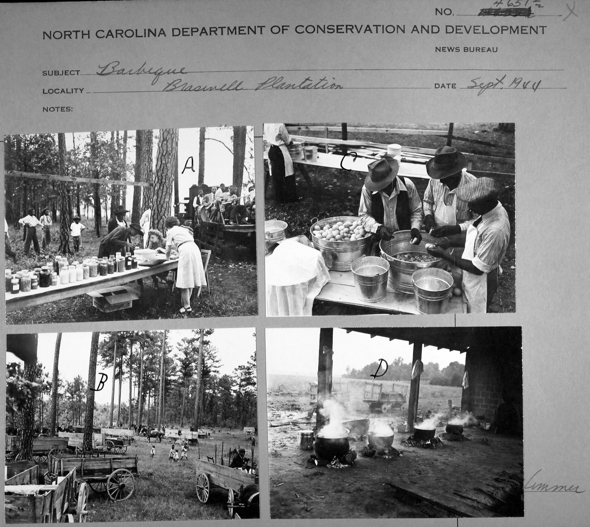

a dishboiled potatoes
also: barbecue potatoes · stewed potatoes · potatoes
'Potatoes' on an eastern plate means these, boiled whole or in halves — not fries and not potato salad.

Potatoes boiled whole or in halves until they are soft and served beside chopped whole hog on the eastern North Carolina plate — the side the Piedmont does not have. At Parker's in Wilson and, by Bob Garner's account, most eastern restaurants they are stewed rather than plainly boiled: peeled potatoes, often with onion, simmered in water with ketchup or red sauce, hot sauce, paprika, sugar, salt, pepper and a spoon of bacon grease, so the broth seasons them through. They come on the plate with slaw and the plate's bread, a corn stick or hushpuppies, and they have been there since Melton's in Rocky Mount charged 45 cents for barbecue with boiled potatoes in 1929.
The story Cited · wp-meltons-barbecue
The potato is the eastern plate's own vegetable, and the first record of it is a price. When Bob Melton's shed on the Tar River in Rocky Mount — the state's first sit-down barbecue restaurant, Wikipedia says — printed its prices in 1929, a plate of barbecue with boiled potatoes was 45 cents and a sandwich 15; by 1988 the plate came with slaw, hushpuppies and Brunswick stew, and the potatoes stayed on the side list with the corn sticks until the restaurant closed in 2005. Clyde Cooper's in Raleigh opened on New Year's Day 1938 with boiled potatoes, French fries, coleslaw and Brunswick stew beside the pork, and the core of that menu has not changed. Bob Garner's North Carolina Barbecue: Flavored by Time (1996) prints Tad Everett's barbecue potatoes — potatoes and onions in chunks, bacon drippings, catsup, Texas Pete and a little sugar, covered with water and simmered until soft — as a variation on the boiled potatoes of most eastern restaurants, and places the dish around Palmyra, Hobgood and Oak City. Tradition holds — the seasoned broth is the pit's idea of a potato: the pepper and a spoon of ketchup in the pot, so the side tastes of the same table as the meat. A Barbecue Bros writer touring the whole-hog pits in 2022 called B's potatoes a simple side not really found in the Piedmont; in Lexington the tray's starch is the hushpuppy.
How it is done Cited · web-southyourmouth-bbq-potatoes
Small potatoes, scrubbed, whole or halved, or larger ones peeled and cut in chunks, go into a pot with cold water and salt and boil until a fork slides in. The stewed way, as Mandy Rivers reconstructs Parker's version and as Garner prints Tad Everett's, adds onion, a quarter-cup of hot sauce, smoked or sweet paprika, black pepper, bacon grease and half a cup of red sauce or a quarter-cup of ketchup, with a little sugar, and simmers twenty to forty minutes until the potatoes are soft and have drunk the broth. Inference — the ketchup and paprika are what tint them. They are served hot beside the slaw and the bread, and take the pork's vinegar sauce spooned over.
Today Cited · web-ourstate-a-day-at-bs
On the plate at B's in Greenville, where the sides are slaw, potatoes or green beans and the barbecue dinner was $7.75 in 2016; on Bum's buffet in Ayden with the collards and black-eyed peas; by the bulk order at Parker's in Wilson; on the menu at Clyde Cooper's in Raleigh (2026). Melton's closed in 2005 and its 1929 price survives on Wikipedia.
Facts
| course | side |
|---|---|
| styles | Eastern North Carolina barbecue |
| region | Eastern North Carolina, North Carolina |
| links | South Your Mouth — BBQ Boiled Potatoes (Parker's version, reconstructed) · Bob Garner's Tad's Barbecue Potatoes, transcribed |
| confidence | medium · needs verification · updated 2026-09-15 |
Recipes you may use
Public-domain cookbooks are printed here in full, spelling and all. Where a recipe is still in copyright, the page gives the ingredients — a list of what goes in is a fact — and links to the rest.
To Boil Irish Potatoes
Boiled Irish Potatoes
Stewed Irish Potatoes
The eastern pits stew them rather than boil them dry, in butter and a little liquid; this is that method, from a North Carolina book of 1867, without the barbecue plate around it.
Its kin
Who points back
Pictures
{kind=link}

Sources
- Melton's Barbecue — Wikipedia · link
- Bob Garner's recipes from NC Barbecue: Flavored by Time (Tad's Barbecue Potatoes), reposted to the smokeringbbq group · link
- North Carolina Barbecue: Flavored by Time — Bob Garner, 1996
- BBQ Boiled Potatoes (Mandy Rivers, 2026-01-20; a reconstruction of Parker's of Wilson's stewed potatoes) · link
- Eastern NC Whole Hog Tour: B's Barbecue – Greenville, NC (Monk, 2022-05-02) · link
- BBQ Jew's View: B's Barbecue (Porky LeSwine, 2011-04-18) · link
- A Day at B's Barbecue — Our State (2016) · link
- Bum's Restaurant — Latham 'Bum' Dennis and Larry Dennis, interviewed by Rien T. Fertel, 5 Dec 2011 · link
- Menu (no prices posted) · link
- Our Story — Clyde Cooper's BBQ, Est. 1938 · link
- Barbecue in North Carolina — Wikipedia · link
- Housekeeping in Old Virginia: Containing Contributions from Two Hundred and Fifty Ladies in Virginia and Her Sister States — Marion Cabell Tyree, editor, 1879 · link
- Dixie Cookery; or, How I Managed My Table for Twelve Years. A Practical Cook-Book for Southern Housekeepers — Mrs. [Maria Massey] Barringer, of North Carolina, 1867 · link
- Flickr Commons · link
- State Archives of North Carolina on Flickr Commons · link
- Department of Conservation and Development, Travel Information Division Photograph Collection · link
Where it came from: Cited a source we name · Harvested pulled from an open dataset · Tradition what the tradition says, hedged · Inference this project's reasoning · Field somebody stood there. This record as JSON.